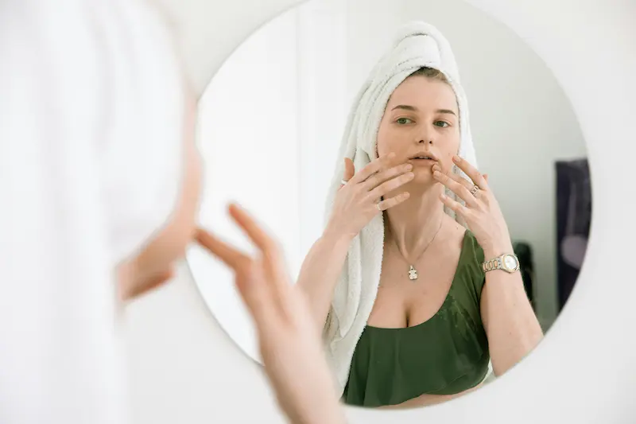
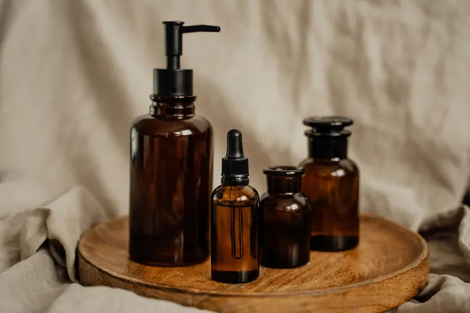
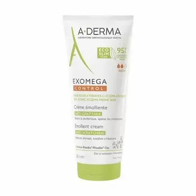
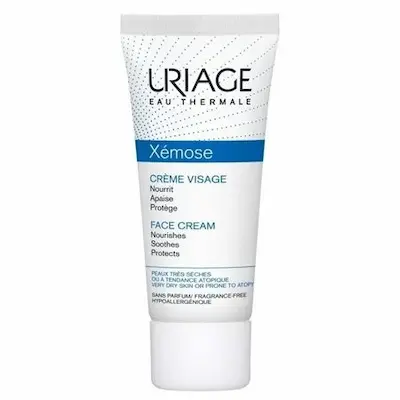
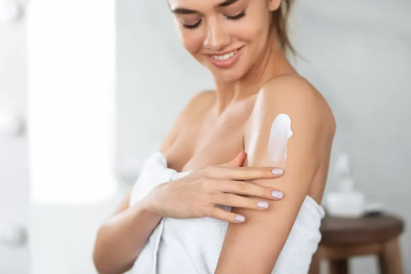

Стянутость кожи — это не временное неудобство, а крик о помощи
вашего защитного барьера, сигнализирующий о критической потере
влаги и липидов.
Стянутость кожи — это не временное неудобство, а крик о помощи
вашего защитного барьера, сигнализирующий о критической потере
влаги и липидов.
Что такое стянутость кожи?
Стянутость кожи — это состояние, вызванное дефицитом влаги в роговом слое или нарушением гидролипидной мантии. В отличие от сухого типа кожи (где не хватает жира), стянутость может настигнуть любого, включая обладателей жирного типа, если кожа теряет способность удерживать воду.
Главная причина дискомфорта — поврежденный защитный барьер. В условиях Молдовы, где жесткая водопроводная вода и сухие ветра — норма, кожа быстро теряет эластичность, что приводит к появлению микротрещин и постоянному чувству «тесноты» на лице.
Признаки обезвоженности и стянутости
Основной симптом — дискомфорт сразу после контакта с водой или очищающим средством. Кожа выглядит тусклой, теряет тургор, а при мимике могут проступать тонкие линии обезвоженности, которые исчезают после нанесения крема.
Важно не путать стянутость с естественной сухостью: если ваша кожа блестит, но при этом «зудит» от сухости и шелушится — это классический признак обезвоженной жирной кожи. Агрессивные попытки высушить прыщи спиртовыми средствами в нашем климате часто становятся главной причиной этого состояния.

Как избавиться от стянутости?
Компоненты против стянутости и сухости
| Ингредиент | Действие |
|---|---|
| Гиалуроновая кислота | Притягивает и удерживает влагу в коже, мгновенно разглаживая линии обезвоженности |
| Церамиды (Ceramides) | Восстанавливают липидный барьер, предотвращая испарение влаги и устраняя чувство стянутости |
| Пантенол (Витамин B5) | Успокаивает раздражение, снимает зуд и ускоряет заживление микротрещин |
| Глицерин / Сквалан | Создают невидимую защитную пленку, смягчают кожу и возвращают ей эластичность |

Лучшие средства при стянутости и дискомфорте кожи


Чего нельзя делать при стянутости кожи?
Как вернуть коже эластичность?
Борьба со стянутостью — это не просто нанесение жирного крема. Нужно работать над удержанием влаги внутри. Когда защитный барьер поврежден, влага просто испаряется (это называется трансэпидермальная потеря воды), оставляя кожу беззащитной.
Главное правило: наслаивайте увлажнение. Сначала используйте увлажняющий тоник или сыворотку на влажную кожу, а затем «закрывайте» их кремом с физиологическими липидами. В климате Молдовы зимой обязательно используйте защитные колд-кремы за 30 минут до выхода на улицу.

Влияние жесткой воды в Молдове
Одной из скрытых причин постоянной стянутости в нашем регионе является высокая жесткость воды. Соли кальция и магния вступают в реакцию с очищающими средствами, образуя нерастворимый налет, который сушит и раздражает кожу.
Попробуйте завершать очищение распылением термальной воды или использованием тоника с низким pH. Это нейтрализует действие солей жесткости и поможет коже быстрее восстановить кислотный баланс, устраняя чувство дискомфорта сразу после ванной.
Часто задаваемые вопросы
В чем разница между сухой и обезвоженной кожей?
**Сухая кожа** — это генетический тип, которому не хватает собственных жиров (липидов). **Обезвоженная кожа** — это временное состояние, при котором любому типу кожи (даже жирному) не хватает именно воды. Стянутость — это главный признак того, что ваша кожа теряет влагу.
Почему кожа стянута, даже если я использую жирный крем?
Скорее всего, ваш крем создает пленку, но не доставляет влагу внутрь. Если барьер поврежден, влага испаряется быстрее, чем крем успевает подействовать. Попробуйте добавить под крем **увлажняющую сыворотку** и наносить её на влажное лицо.
Как жесткая вода в Молдове влияет на чувство стянутости?
Соли кальция и магния в нашей воде агрессивно воздействуют на защитный барьер, вызывая его микроповреждения. Это приводит к мгновенной стянутости после душа. Чтобы нейтрализовать этот эффект, всегда используйте **смягчающий тоник** сразу после контакта с проточной водой.
Можно ли избавиться от стянутости, просто выпивая больше воды?
Питьевой режим важен для здоровья, но для кожи этого недостаточно. Если нарушен внешний защитный слой (барьер), влага будет испаряться с поверхности лица, сколько бы вы ни пили. Для устранения стянутости критически важен именно **грамотный внешний уход** с церамидами.